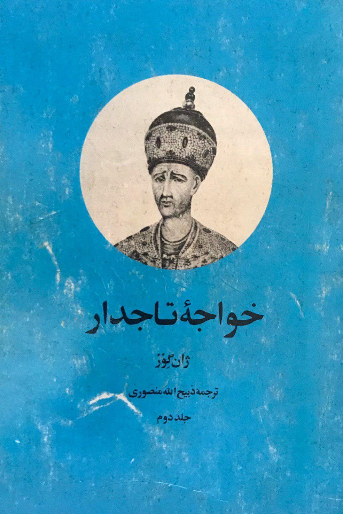
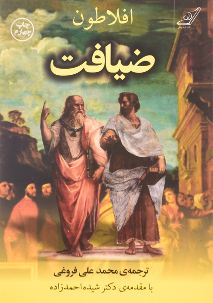
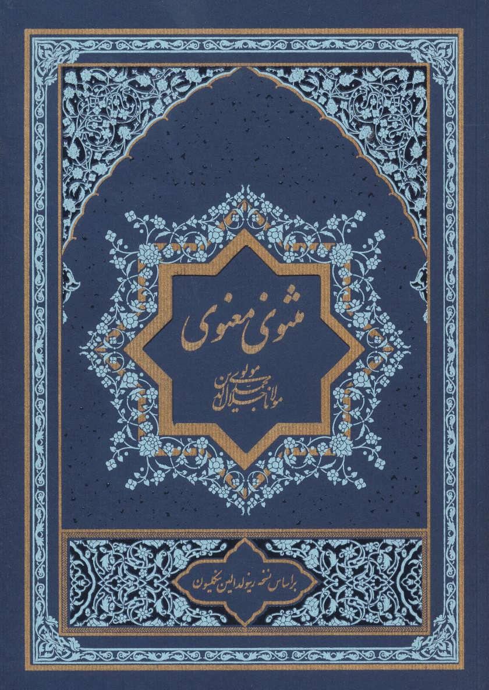
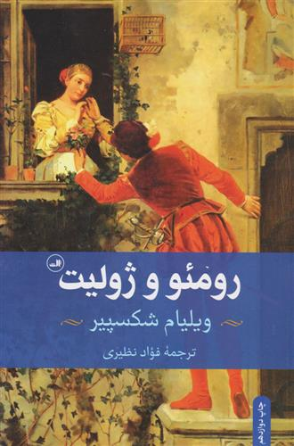
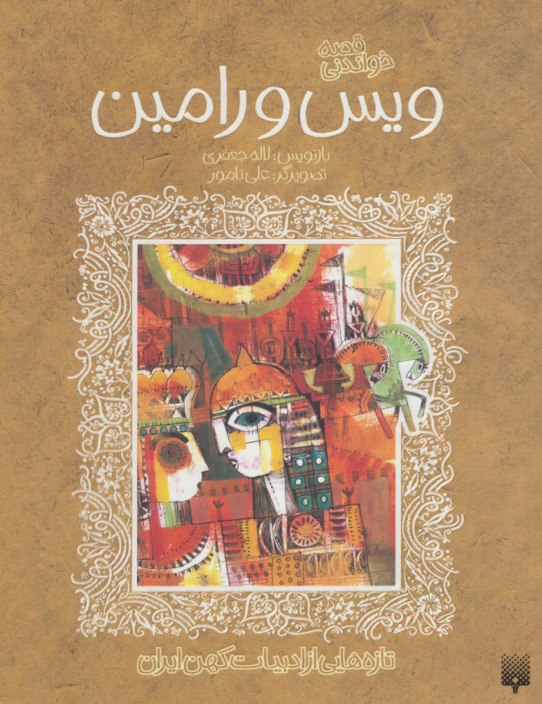

تاریخ
خواجه تاجدار
خواجه تاجدار نوشته ی ژان گور نویسنده ای فرانسوی است که متاسفانه
اطلاعات چندانی به غیر از نام و ملیت او در دست نیست. این کتاب برشی
است داستان گونه از رخدادهای تاریخی ایران از زمان مرگ نادرشاه افشار
تا پایان حیات آقا محمد خان قاجار. با وجود این که شخصیت پردازی ها و
پی رنگ داستانی این کتاب بر اساس تاریخ و واقعیت شکل گرفته است اما
بسیاری از منتقدین و مورخین معتقد هستند که رویدادهای نگاشته شده در
این اثر بیشتر ساخته و پرداخته ذهن خلاق ذبیح الله منصوری مترجم و
تدوینگر آن است و می توان گفت تلاشی است برای اثبات درستی و توجیه
ستمگری های آقا محمدخان قاجار و پیروانش. با این حال به هیچ وجه نمی
توان از جذابیت متن این کتاب و شیوه بیان آغشته به زیبایی های ادبی آن
چشم پوشی کرد. وقایع و اتفاقات با چنان جزییات و ریزبینی هایی توصیف
شده اند که گویی در پیش چشمانتان در حال رخ دادن هستند. لحن روایی به
کار رفته در متن کتاب خواجه تاجدار آن چنان است که با وجود اتفاقات
ناگوار و خشونت آمیزی که در طول داستان رخ می دهد، هم چنان برای شما
جذاب خواهد بود و یک لحظه هم از خواندن آن دست نخواهید کشید.
۱۵۰٬۰۰۰ تومان

فلسفه
ضیافت
آریستوکلس ملقب به افلاطون (Plato) یا پلاتون، دومین فیلسوف از
فیلسوفان بزرگ سهگانه یونانی (سقراط، افلاطون و ارسطو) است. افلاطون
نخستین فیلسوفی است که آثار مکتوبی از او به جا مانده . همچنین بسیاری
او را بزرگترین فیلسوف تاریخ میدانند. چیزی که بیش از نام خود
افلاطون شهرت دارد و شاید عامل آشنایی عامه مردم با افلاطون است،
مفهومی به نام عشق افلاطونیست. ریشه این عبارت به همین کتاب بر
میگردد. ضیافت (Syposium) تعریف افلاطون از عشق است، چنانکه نام دیگر
آن رسالهای در باب عشق است. افلاطون فیلسوفی پر سر و صداست. کسی که
مجموعه گفتههای سقراط را به نوشته تبدیل کرده است و همین کار باعث شده
بسیاری تردید ببرند که سقراط شخصیتی زاده ذهن افلاطون است و اصلاً وجود
خارجی نداشته است. از طرف دیگر برخی صاحب نظران و فلاسفه جدید معتقدند
افلاطون فلسفه را از آنچه هدف اصلیاش بود دور کردند. به زعم آنان
فلسفه برای این به وجود آمده بود تا انسان و جامعه را به خودآگاهی
برساند و زندگی را برای نسل بشر لذت بخش بسازد. با همه این اوصاف کتاب
ضیافت میتواند نگاهی جدید باشد به یکی از غنیترین مفاهیم بشری، عشق.
۱۵۰٬۰۰۰ تومان

شعر
منطق الطیر
شاید کسی مناسبتر از عطار نیشابوری برای آشنا شدن با ادبیات عرفانی
فارسی وجود نداشته باشد چرا که او هفت شهر عشق را گشته است و از سوی
دیگر میبینیم که چطور سنت ادبیات عرفانی پس از عطار رنگوبویی
جاندارتر و زیباتر به خود گرفته است. همانطور که اوج آن را میتوان در
آثار مولانا بهروشنی ملاحظه کرد و پس از آن میبینیم که چطور هنرمندان
و عارفان سراسر دنیا از منطقالطیر او در آثار خود الهام گرفتهاند.
کتاب اندیشههای زرین عطار نیشابوری گزیدهای از مثنویها و رباعیات
اوست که با مزاجی عرفانگرایانه توسط فرزانه اصفهانی در کنار یکدیگر
قرار گرفته است. در این کتاب میبینید که چطور بعد از معرفیای مختصر
به اشعاری از عطار با موضوعات خدا، امید، اشتیاق، غم و شادی پرداخته
میشود که البته طرز قرار گرفتن فهرست موضوعی از نظر محتوایی به راه
اکثر مثنویهای منظوم مانند منطقالطیر یا آثاری شبیه به آن رفته است و
انگار که با خواندن آن، چند کتاب عطار را با یکدیگر خواهید خواند. طبق
سنتهای ادبی، کتاب با نام خدا و نعت پیامبران آغاز میشود و پس از آن
به وادیهای عرفانی که هر عارف در راه خود به ترتیب با آن مواجه
میشود، پرداخته شده است.
۱۵۰٬۰۰۰ تومان

شعر
مثنوی و معنوی
در هر بیت از کتاب مثنوی معنوی (Masnavi)، دنیایی از معانی مختلف نهفته
است. مولانا جلال الدین محمد بلخی (Rumi) با هنرمندی بینظیر خود،
پیچیدهترین مفاهیم عرفانی و فلسفی را در این کتاب، در قالب
داستانهایی ساده بیان میکند. او خواننده را دعوت میکند تا از سطح و
ظاهر کلمات فراتر رود و به عمق معانی راه یابد. مثنوی معنوی را میتوان
اقیانوسی بیکران از حکمت دانست. اما چرا این کتاب پس از گذشت قرنها
همچنان خوانندگان را مجذوب خود میکند؟ مولانا جلال الدین محمد بلخی در
مثنوی معنوی از تکنیکی بهره میبرد که خواننده را به تفکر و تعمق
وامیدارد. او از ترکیب داستانها با مفاهیم عمیق عرفانی استفاده
میکند تا خواننده بتواند بهتدریج به حقیقت پی ببرد و همچنین درک
عمیقتری از حکایات داشته باشد. مولوی با این روش، هم محتوای
آموزندهای را ارائه میدهد، هم مخاطب را به یک سفر درونی دعوت میکند؛
سفری که تلفیقی از عشق و عرفان است. این شیوهی بیان سبب این میشود که
هر بار به مطالعهی کتاب مثنوی معنوی میپردازیم، نکات جدیدی را کشف
کنیم که در گذشته از نظرمان پنهان مانده بود.
۱۵۰٬۰۰۰ تومان

شعر
دیوان حافظ
هیچ فارسیزبانی را نمیتوان یافت که با اشعار حافظ، شاعر نامدار قرن
هشتم هجری، آشنا و مأنوس نباشد. این نسخه از کتاب دیوان حافظ شیرازی که
هماینک در دست دارید، جهت استفادهی عموم فارسیزبانان تهیه و ارائه
شده است. رسمالخط بهقاعده و رعایت اعرابها و علائم سجاوندی در
نسخهی حاضر، سبب شده که مطالعهی بیدردسر غزلیات حافظ برای همگان با
هر سطحی از دانش در زمینهی شعر کلاسیک، ممکن و میسر باشد.در این مملکت
شاعران از دیرباز جایگاهی شامخ و والا داشته و مهمترینِ مشاهیر و
سرشناسترینِ مفاخر در میان تودهی مردم به شمار میرفتهاند. همین
امروز اگر در روستاهای دورافتادهی غرب و شرق ایران راه بیفتید، به
سادگی مردمی را مییابید که بیآنکه لزوماً تحصیلات آکادمیک و چه بسا
حتی سواد خواندن و نوشتن داشته باشند، به شیرینی اشعار شعرایی چون
فردوسی و خیام و سعدی را از بر میخوانند و مایهی حظّ مخاطب
میشوند.در میان شاعران فارسیزبان، از حیث جلب توجه عامّه، هیچ شاعری
از اقبال خوش و موفقیت صاحب کتاب دیوان حافظ شیرازی برخوردار نبوده و
نخواهد بود. حافظ با اشعار شیوا و گیرای خود قلوب مردم این سرزمین را
لمس کرده و به قول یکی از حافظشناسان زمانهی ما، بدل به وجدان و شعور
جمعی ما شده است.
۱۵۰٬۰۰۰ تومان

عاشقانه
رومئو و ژولیت
کتاب رومئو و ژولیت یکی از نمایشنامههای درام عاشقانۀ ویلیام شکسپیر
است که اولین نمایشنامه غمانگیز او محسوب میشود. محور داستان شکسپیر
در این نمایشنامه عشق است و او توانسته با نهایت مهارت داستان خود را
بیان و این حس را در مخاطبان خود نیز در طی قرنها ایجاد کند. دو
خاندان، به شان و جاه یکسان، در ورونای دلکش و صحنۀ این داستان، از
کینههای دیرین تا تمردی نوین ره میپیمایند و شهر گانان، دستها به
خون یکدیگر میآلایند. میوهٔ جان نابختیار این دشمنان، دو عاشق ستاره
سوختهاند که جان خویش میستانند و با نگونبختی غمبار و دریغانگیز و
با مرگشان، خصومت والدان خود را به خاک میسپارند. رومئو و ژولیت
(Romeo And Juliet) اگرچه داستان عشق دو جوان است، اما در عین حال به
روایت رقابت میان خانوادههای پا بهسن گذاشته آنها هم میپردازد.
نکته عجیب این است که با وجود اینکه دشمنی میان دو خانواده کپیولت و
مونتیگو یکی از عناصر کلیدی این نمایشنامه است، اما هیچ وقت درباره
ریشههای این کینه قدیمی صحبتی به میان نمیآید اما دو عاشق هنجار شکن
این نمایشنامه میخواهند قوانین سختگیرانه اجتماعی را به نفع خودشان
کنار بزنند. جوانانه در نهایت به فاجعه منجر میشود.اما شکسپیر توقع
دارد ما خودمان مقصر این تراژدی را پیدا کنیم.
۱۵۰٬۰۰۰ تومان

عاشقانه
ویس و رامین
داستان ویس و رامین حکایت عشقی است که در پی سرکشی از ازدواجی اجباری
رخ میدهد. داستانی از اقوام پارتی در زمان اشکانیان سروده فخرالدین
اسعد گرگانی. در این داستان برخی سنتهای منسوخ باستانی دیده
میشود.شاید شما هم تا کنون درباره داستان ویس و رامین و عشق آنها
شنیدهاید اما از حکایت این عشق چیز زیادی نمیدانید. آنچه از قرائن
برمیآید، داستان یاد شده مانند شعر لیلی و مجنون یک داستان عشقی است و
از زمان اشکانیان و مربوط به اقوام پارتی است که فخر الدین اسعد گرگانی
آن داستان را شنیده و در قرن پنجم هجری به نظم درآورده است. به این
دلیل که این داستان مربوط به هزاران سال پیش است، یک سری از رسوم منسوخ
باستانی مثل ازدواج با محارم در آن دیده میشود. این داستان روایتگر یک
مثلث عشقی است؛ یعنی سه نفر در یک جریان عاشقانه دخالت دارند. از این
رو در گذشته این داستان در میان مردم ایران خوشنام نبوده و والدین به
فرزندان خود اجازه خواندن این داستان را نمیدادهاند.احتمالاً سرچشمه
این داستان به ۲۰۰۰ سال پیش و دوران اشکانی بر میگردد و گرگانی آن را
هزار سال بعد به گفته خود از سمرها یافته و به نظم درآورده است. یازده
نسخه خطی از این داستان وجود دارد. ممکن است در بازنویسی و انتقال
داستان از کاتبی به کاتب دیگر برخی از مطالب از قلم افتاده باشد که
موجب گسستگی در نسخههای موجود شده است.
۱۵۰٬۰۰۰ تومان

شعر
گلستان سعدی
گلستان سعدی یکی از مهمترین کتب اخلاقی و تعلیمی در طول تاریخ است که
از یک دیباچه و هشت باب به نظم و نثر تشکیل شده و بنا بر شواهد تاریخی
در 6 ماه به نگارش درآمده است. اغلب آثار سعدی کوتاه و به شیوهی حکایت
و پندهای اخلاقی هستند. برخی حکایتهای گلستان نیز بلند و برخی دیگر
کوتاه هستند که حاوی شخصیتهایی خیالی و حقیقیاند. گلستان سعدی یکی از
آثار زیبا و ماندگار ادبیات فارسی است که وضعیت جامعهی زمان خود را از
لحاظ فرهنگی و اجتماعی به تصویر میکشد. سعدی در این کتاب از پرداختن
به تاریخنگاری و تذکرهنویسی اجتناب کرده و فقط به روایت امور مربوط
به زندگی و منش انسانهای آن دوره پرداخته است. او پس از نگارش بوستان
و گلستان، توانست به شهرت فراوانی دست یابد که از نظر منتقدین و
صاحبنظران ادبی، این کتاب مانند یک معجزه است. قلم ماندگار و بینظیر
سعدی در روایت مفاهیم و حکایتهای اخلاقی چنان شگفتانگیز است که هر
انسانی را به خود جذب میکند و در قالب آموزههای اخلاقی و به دور از
نصیحتهای معمولی و به زبانی هنرمندانه و جذاب است. این اثر آنقدر
شیرین و دلنشین است که برای هیچ خواننده و شنوندهای خسته کننده نیست
بلکه حاوی مطالبی تازه از زبان حکیمی دانا و فرهیخته است.
۱۵۰٬۰۰۰ تومان